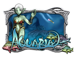
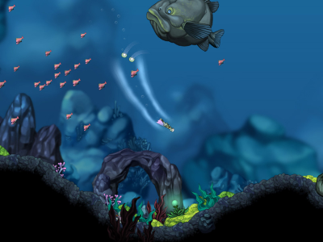
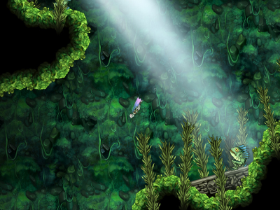
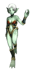

Aquaria
Dieser Artikel wurde für die folgenden Ubuntu-Versionen getestet:
Ubuntu 16.04 Xenial Xerus
Ubuntu 14.04 Trusty Tahr
Zum Verständnis dieses Artikels sind folgende Seiten hilfreich:

Aquaria  ist ein Action-Adventure aus dem Hause Bit Blot . Man schlüpft in die Rolle der Nixe Naija und erforscht die Unterwasserwelt auf der Suche nach ihrer Familie. Dunkelheit wird sie umgeben - ebenso versteckte Höhlen und lichtdurchflutete Oasen. Auf ihrer gefährlichen Reise entdeckt Naija andere Kreaturen, löst die verschiedenen Rätsel und setzt ihre magischen Gesänge ein. Diese geben ihr Kraft, lassen sie neue Fähigkeiten erlernen und gestatten ihr physisches Aussehen zu verändern. Das Spiel ist vollständig englisch vertont und kann mit der Maus oder der Tastatur gespielt werden.
ist ein Action-Adventure aus dem Hause Bit Blot . Man schlüpft in die Rolle der Nixe Naija und erforscht die Unterwasserwelt auf der Suche nach ihrer Familie. Dunkelheit wird sie umgeben - ebenso versteckte Höhlen und lichtdurchflutete Oasen. Auf ihrer gefährlichen Reise entdeckt Naija andere Kreaturen, löst die verschiedenen Rätsel und setzt ihre magischen Gesänge ein. Diese geben ihr Kraft, lassen sie neue Fähigkeiten erlernen und gestatten ihr physisches Aussehen zu verändern. Das Spiel ist vollständig englisch vertont und kann mit der Maus oder der Tastatur gespielt werden.
Die native Linuxversion wird beim Spielehändler GOG angeboten. Außerdem steht der Quellcode für die Engine unter der GNU GPL2 zur Verfügung, mit dem sich ein Linux-Starter für die Windows-Version des Spiels kompilieren lässt.
Die Beta-Versionen des Spiels, welche man auf noch auf holarse-linuxgaming.de  findet, erlaubten bis zum 13. Januar 2010 das kostenlose testen des Spiels. Durch den Installer kann diese Einschränkung jedoch aufgehoben werden.
findet, erlaubten bis zum 13. Januar 2010 das kostenlose testen des Spiels. Durch den Installer kann diese Einschränkung jedoch aufgehoben werden.
|  |  |
| Spieleszene | Spieleszene |
Installation¶
Humble Bundle¶
Aquaria war Teil einiger zeitlich begrenzter Humble Indie Bundles (Liste aller Bundles), es ist jedoch nicht im regulären Humble Store erhältlich.
Zur Installation lädt man die in seinem Humble-Account aufgelisteten .deb-Dateien herunter, je nachdem ob man ein 32- oder 64-Bit Ubuntu besitzt. Diese kann man im Dateimanager per Doppelklick installieren [2].
Anschließend kann das Spiel über "Anwendungen -> Spiele -> Aquaria" gestartet werden.
GOG¶
Die Spieleplattform GOG (ehem. „Good Old Games“) bietet Aquaria regulär für Linux an. Zu deren Installation muss die heruntergeladene Installationsdatei ausführbar [1] gemacht werden. Dies kann im Dateimanager geschehen oder mit dem folgenden Terminal-Befehl:
chmod u+x gog_aquaria_2.0.0.4.sh # evtl. die Versionsnummer im Dateinamen anpassen
Danach kann sie direkt im Terminal oder per Doppelklick im Dateimanager gestartet werden und es öffnet sich das grafische Installationsfenster von Aquaria.
Nach erfolgreicher Installation kann das Spiel über "Anwendungen -> Spiele -> Aquaria" gestartet werden.
Windows-Version¶
Hat man nur die Windows-Version zur Verfügung, kann man die Linux-Binaries mit der Windowsversion nutzen. Es existiert eine bereits kompilierte Version oder man übersetzt den Quellcode selbst.
Hinweis:
Das Archiv enthält keine Spieldaten - es wird eine Windows-Version des Spiels benötigt.
Icculus¶
Von mediafire.com die benötigte Datei herunterladen und entpacken [3]. Die Ausführrechte für die enthaltene .bin-Datei setzen [1] und diese in das Verzeichnis kopieren, in dem sich die Windows-Version des Spiels befindet. Anschließend einen Menüeintrag [7] vornehmen - das im Archiv enthaltene Icon kann dafür verwendet werden.
|  |
| Naija |
Quellcode¶
Zur Vorbereitung müssen die folgenden Pakete installiert sein [4]:
build-essential
cmake
mercurial
libopenal-dev
libsdl1.2-dev
 mit apturl
mit apturl
Paketliste zum Kopieren:
sudo apt-get install build-essential cmake mercurial libopenal-dev libsdl1.2-dev
sudo aptitude install build-essential cmake mercurial libopenal-dev libsdl1.2-dev
Den Quellcode herunterladen und ins Verzeichnis aquaria wechseln [2]:
hg clone http://hg.icculus.org/icculus/aquaria cd aquaria
Nun mit einem Editor [5] die Datei CMakeLists.txt bearbeiten. Hier die Zeile
IF(NOT CMAKE_BUILD_TYPE)
SET(CMAKE_BUILD_TYPE RelWithDebInfo CACHE STRING "None Debug Release RelWithDebInfo MinSizeRel" FORCE)
ENDIF(NOT CMAKE_BUILD_TYPE)zu
IF(NOT CMAKE_BUILD_TYPE)
SET(CMAKE_BUILD_TYPE Release CACHE STRING "None Debug Release RelWithDebInfo MinSizeRel" FORCE)
ENDIF(NOT CMAKE_BUILD_TYPE)abändern und kompilieren [6]:
cmake CMakeLists.txt make
Der Starter aquaria kann nun in den Ordner mit den Spieledaten aus der Windows-Installation kopiert werden - Ausführrechte [1] setzen und einen Menüeintrag [7] vornehmen.
Deinstallation¶
Um Aquaria zu deinstallieren, reicht es aus, das Deinstallationsscript mit Root-Rechten auszuführen [2]. Wenn Aquaria im entsprechenden /usr Verzeichnis installiert wurde, lautet der Befehl [2]:
sudo /usr/local/games/aquaria/uninstall-aquaria.sh
Für die Deinstallation aus dem Homeverzeichnis funktioniert
sudo ~/aquaria/uninstall-aquaria.sh
Das Deinstallationsscript entfernt jedoch nicht die Einstellungen und Speicherstände. Dies kann manuell nachgeholt werden, indem im Home-Verzeichnis der versteckte Ordner .Aquaria gelöscht wird.
Sprache¶
Von infiniteammo.ca oder holarse-linuxgaming.de die Datei German_subs.zip herunterladen und entpacken [3]. Im Installationsverzeichnis von Aquaria den Ordner scripts öffnen und den enthaltenen Ordner vox in vox_original umbenennen. Anschließend den entpackten Ordner vox nach scripts kopieren. Der deutsche Untertitel ist nun verfügbar - mit einigen kleinen Einschränkungen.


- Erstellt mit Inyoka
-
 2004 – 2017 ubuntuusers.de • Einige Rechte vorbehalten
2004 – 2017 ubuntuusers.de • Einige Rechte vorbehalten
Lizenz • Kontakt • Datenschutz • Impressum • Serverstatus -
Serverhousing gespendet von